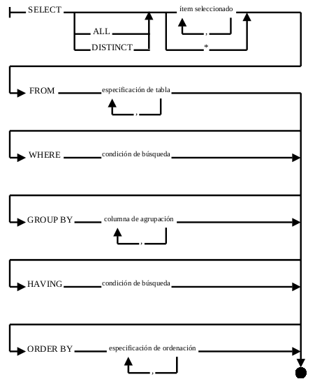

SELECT: (selecciona)
- ALL, permite escoger todos los registros (esto es por defecto, así que no se suele usar).
- DISTINCT, mostrará los registros sin duplicarlos.
- item_seleccionado, columnas que se desean mostrar en la consulta separadas por coma (,) y en ocasiones acompañadas por funciones. Si se escribe * se mostrarán todas las columnas. Si existen columnas con el mismo nombre en tablas diferentes, se especificará la tabla seguida de un punto (.) y el nombre de la columna. Por ejemplo: clientes.nombre, proveedores.nombre, productos.nombre, ...
FROM: ([extraídas] desde...)
- tablas, se enumerarán, separadas por coma, las tablas que almacenan la información que deseamos sacar, las relacionadas y las intermedias si fuera necesario. Se puede declarar un alias por cada tabla: con poblaciones p por ejemplo, se consigue usar p en el resto de elementos vez de poblaciones.
WHERE: (donde se cumpla...)
- condición de búsqueda, se especifican condiciones que se deben cumplir mediante operadores unarios (NOT) o binarios (=, <, >, <>, AND, OR, ...). Si la condición es cierta, la fila se incluye; en caso contrario, no.
GROUP BY: (agrupado por...)
- columnas, por las que se agrupará para crear subtotales en consultas con resultados numéricos.
HAVING: (teniendo...)
- condición, se aplica una condición de selección en la que, de todos los resultados obtenidos, sólo muestra los que validen dicha condición.
ORDER BY: (ordenado por...)
- ordenación, se listan las columnas por las que se ordenará el resultado de mayor a menor prioridad.